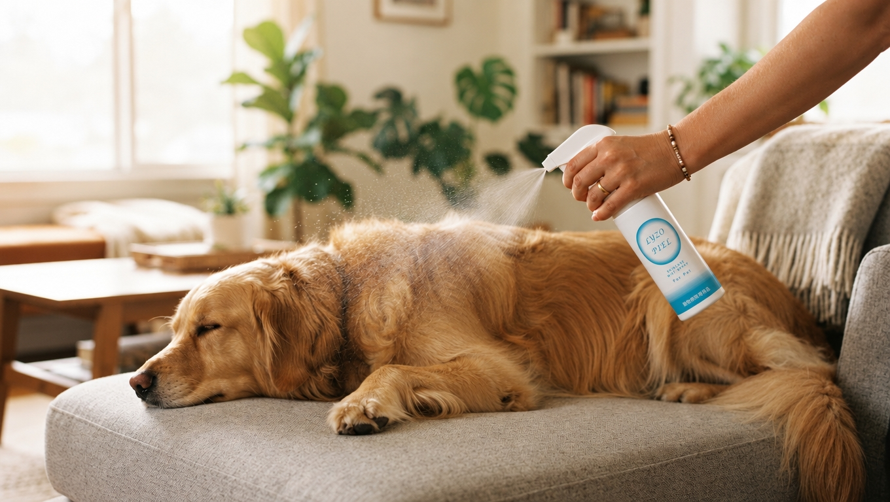
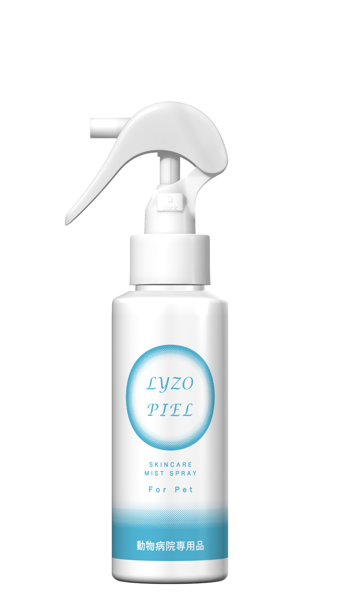
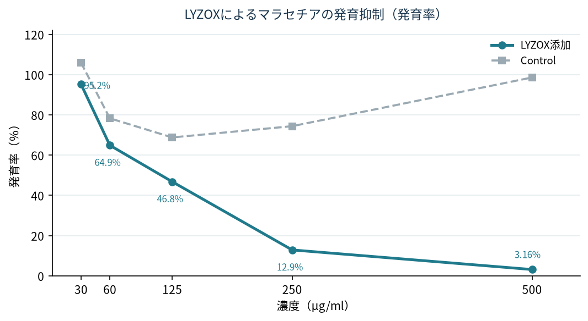
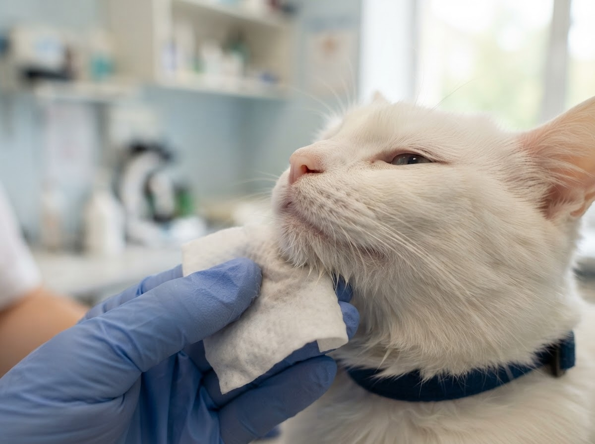
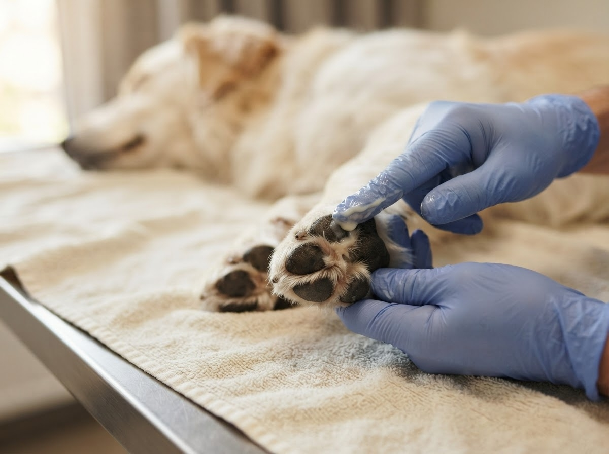

皮膚トラブルを抱える動物たちのケアに、日常的な皮膚管理の視点を。
リゾペールは、動物の皮膚ケアに新たな選択肢を提案する製品です。日々のケアや継続的な管理を考える動物病院に向けて、皮膚管理の可能性をご紹介します。
獣医師が向き合う皮膚トラブルと、リゾペールが提案できる場面
赤み、かゆみ、皮膚炎、細菌・真菌に関わる皮膚トラブル。動物病院では、症状のある皮膚への対応と、その後の状態を維持するための管理の両方が求められます。
皮膚の状態や原因、治療内容は一頭一頭異なります。リゾペールは、特性や臨床報告を踏まえ、皮膚トラブルが生じている場面の外用ケアから、状態が落ち着いた後の継続管理まで、獣医師が活用を検討するための選択肢です。

今ある皮膚トラブルへの対応と、再び困らないための継続的なケア。その両方の視点からご紹介します。
リゾペールは、皮膚トラブルのある動物に対する外用ケアや、その後の皮膚管理を獣医師が検討する際にご紹介できるスプレー製品です。
皮膚トラブルが起きているときの外用ケアにも、落ち着いた後の皮膚管理にも。動物の状態、症状のある部位、ケアの継続しやすさを踏まえ、リゾペールの特性と臨床報告を手掛かりに、獣医師の治療方針に沿った活用をご検討ください。
製品の基本情報｜LYZOX®配合の動物病院専用スキンケアスプレー
リゾペールは、機能性素材LYZOX®（リゾックス）を配合した動物病院専用のペット用スキンケアスプレーです。皮膚トラブルがある場面での外用ケアから日常の皮膚管理まで、獣医師による活用を想定してご紹介します。

リゾペール スキンケアスプレー 100mL（動物病院専用品）
各種安全性試験を実施しています。
機能性素材LYZOX®が、お肌の環境にアプローチします。
症状のある皮膚への外用ケアに加え、乾燥が気になる部位の保湿にも着目しています。
水、グリセリン、BG、LYZOX®（リゾチーム、キトサン）、カプリン酸、ヒアルロン酸Na、水溶性コラーゲン 他
耳周り／目周り／口周り／鼻周り／肉球／デリケートゾーン周囲／全身の清潔・保湿
LYZOX®の作用とリゾペールの臨床報告
LYZOX®（リゾックス）は、抗菌タンパク質であるリゾチームと、キトサン由来成分を組み合わせた機能性素材です。帝京大学医真菌研究センターや東京科学大学（旧東京医科歯科大学）呼吸器内科との研究により、抗菌・抗真菌作用や抗炎症に関連する反応が報告されています。
犬由来好中球の粘着反応を抑制したin vitroデータが報告されています。炎症反応との関係を考えるうえでの基礎研究です。
マラセチアの増殖抑制、カンジダの菌糸形発育抑制がin vitroで報告されています。
緑膿菌、アシネトバクター・バウマニ、MRSA等に対する抗菌活性がin vitroで報告されています。
現場から、処置後などのにおいが気になる場面での使用経験が寄せられています。
各種試験で安全性を確認しています。
研究論文・症例報告・特許を整理して紹介します。Section7で確認する

基礎研究で示された素材の作用と、犬の皮膚病変にスプレーを使用した臨床評価・症例報告を分けて説明します。
診療上の課題を起点とした、リゾペールの提案方法
皮膚トラブルへの提案では、まず先生が診ている疾患・症状と、現在の治療方針を伺います。そのうえで、リゾペールに関係する研究・臨床報告を示し、症状のある時期の外用ケア、治療との併用、状態安定後の継続管理といった活用可能性を相談します。
導入「先生の病院では、マラセチア皮膚炎や表在性膿皮症、赤み・かゆみを伴う皮膚トラブルのご相談は多いでしょうか？」
聞き取り「そうした症例で、外用ケアの選択肢や、自宅での継続管理が難しい点など、お困りのことはありますか？」
つなぎ「そうした皮膚管理の観点から、リゾペールについてご紹介させてください。製品の特徴や使用方法をご確認いただき、治療中の外用ケアも含め、先生の病院での活用の可能性をご検討いただければと思います。」
先生の診療課題を伺い、関連する研究・症例を示して提案する。症状のある時期のケアと、その後の管理の両方を視野に入れることがポイントです。
疾患・症状から探す、治療中の外用ケアと継続管理の活用ガイド
マラセチア皮膚炎が疑われる子、表在性膿皮症の症例、赤み・かゆみを伴う皮膚トラブル、褥瘡など局所のケアが必要な症例。まずは先生が診ている症状・疾患から、関連する研究や症例報告を確認してください。
リゾペールは、LYZOX®を配合したスプレータイプの製品です。皮膚トラブルが生じている場面での外用ケア、他の治療との併用、症状が落ち着いた後の継続管理など、獣医師の診断・治療方針に合わせた活用を検討するための情報をまとめています。


入口（疾患・症状・治療場面から探す）
種類
症状タグ
該当する項目 0 件
項目はスプレッドシートに1行追加すると、入口・タグ・カードが自動で増えます（画面の作り直しは不要）。
皮膚トラブルを繰り返している／シャンプーによるケアが難しい／特定の部位に継続的なケアが必要／自宅でのケア方法を検討している。このような場面に出会ったら、リゾペールを思い出してください。
基礎研究・臨床研究・症例報告から確認する
リゾペールの提案根拠には、LYZOX®素材の基礎研究だけでなく、犬の皮膚病変にスプレーを使用した臨床研究や症例報告があります。マラセチア皮膚炎が疑われる犬9頭の検討、表在性膿皮症の症例報告などを、先生への説明に活用できます。
素材の抗菌・抗真菌・抗炎症関連作用（in vitro）、スプレー使用時の臨床評価、個別症例の経過はエビデンスの性質が異なります。その違いを理解したうえで、先生への製品紹介に活用してください。
種別で絞り込む
| 情報の種類 | 分かること | それだけでは断定できないこと |
|---|---|---|
| 基礎研究 | 特定条件下での作用 | 動物の疾患に対する臨床効果 |
| 臨床試験 | 対象・条件下での評価結果 | すべての症例における効果 |
| 症例報告 | 個別症例の経過 | 一般的な有効性や再現性 |
| 製品仕様 | 成分・形状・使用方法 | 疾患の治療効果 |
各研究の原著・症例資料へのリンクを設置し、営業担当者が必要に応じて詳細を確認できる構成にします。
営業シナリオ・会話例
先生が日頃診ている皮膚疾患や困っている症例を伺い、関連する研究・臨床報告をご紹介します。症状のある時期に使用する外用ケアとしての可能性と、その後の維持管理という二つの軸でお話しください。
症状・疾患 → 現在の治療方針 → 関連するエビデンス → 活用可能性、の順に話す。
導入「先生、今日は皮膚管理の選択肢として、リゾペールという製品をご紹介させてください。LYZOXを配合したスプレータイプの製品で、製品の特徴や研究・症例資料もご確認いただけます。」
製品紹介「リゾペールは、継続的な皮膚管理や局所的なケアを検討する際の選択肢としてご紹介している製品です。具体的な使用場面については、先生の診療方針や対象となる動物の状態に応じてご検討いただけます。」
根拠を求められたら「関連する研究データや症例資料をご用意しています。対象や試験条件、結果を確認いただけるよう、資料をご案内します。」
クロージング「先生の診療で活用を検討できそうなケースがあれば、まずは製品資料と使用方法をご確認いただければと思います。ご不明な点があれば、追加資料もご案内します。」
以下は販売代理店の営業担当者が聞き取った使用経験です。症例の診断、併用薬、使用条件が一定ではなく、効果や再現性を保証するものではありません。研究・症例報告と区別して紹介してください。
お腹、指先、耳周りの赤みや痒みへの第一選択として。
「1日2回の塗布で、早ければ2〜3日で改善が見られます。アポキル（内服薬）で反応が鈍い症例や、ステロイドの長期使用を避けたい症例での併用・切り替えが目立ちます」
マラセチア菌の抑制として。
「マラセブシャンプーの合間のケアや、抗真菌薬（イトラコナゾール等）との併用で効果を発揮します。ベタつかないため、脂っぽさを嫌うオーナーに好評です。リゾペールのみで維持できている例もあります」
カサカサ肌、フケ、肉球のひび割れへの保湿として。
「3回程度の使用で粉吹きが減少した例や、浸透性が高く『肉球に塗っても滑りにくい』点が評価されています。冬場の乾燥だけでなく、シャンプー後の保湿剤としても定着しています」
院内処置後の匂い消しと二次感染予防として。
「肛門腺絞り後の独特な匂いが和らぐため、ルーチンとして採用する病院が多いです。スタッフが消臭効果を実感しやすく、そこからオーナーへの推奨につながる成功パターンが多く見られます」
再発性膿皮症の維持管理、頑固なアゴニキビの洗浄として。
「抗生剤への耐性が懸念される症例や、薬を好まないオーナーへの提案として有効です。コンベニア等で治らなかった猫のアゴニキビがきれいになった事例も報告されています」
この現場の声を、疾患×使用場面×評価内容で整理した要約版（2ページ）は こちら（PDF）。
商談前・商談中に確認できる営業FAQ
商談では、製品の特徴だけでなく、使用方法、対象となる動物、研究データ、安全性などについて質問されることがあります。回答内容を確認し、必要に応じて製品資料・エビデンス・使用方法資料をご案内ください。
必要な情報を、すぐに確認できる。
営業活動に必要な資料をまとめています。PDFはこのページ（限定URL）内でのみ配布してください。
「ご提供待ち」の資料は、ご提供いただき次第この一覧に追加します（追加はスプレッドシートの行追加と同じ扱いです）。